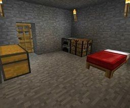
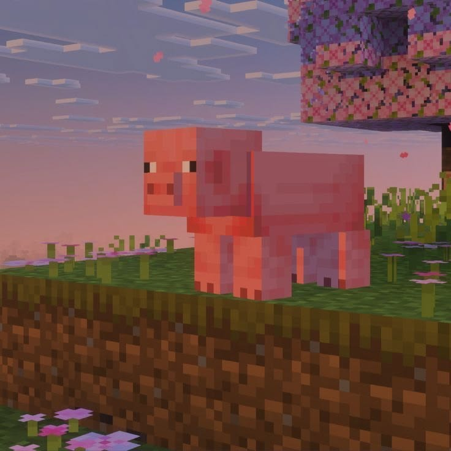
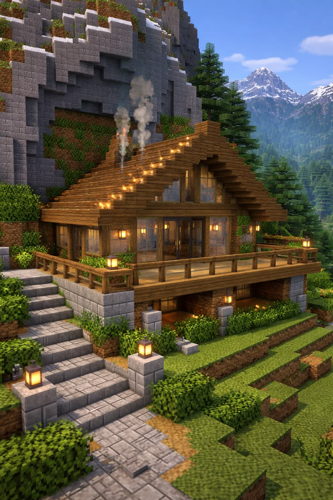
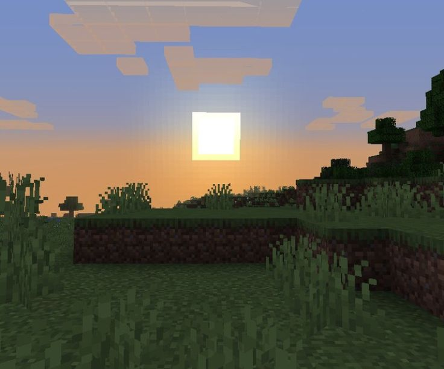
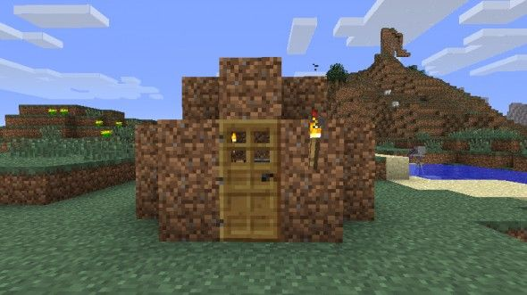
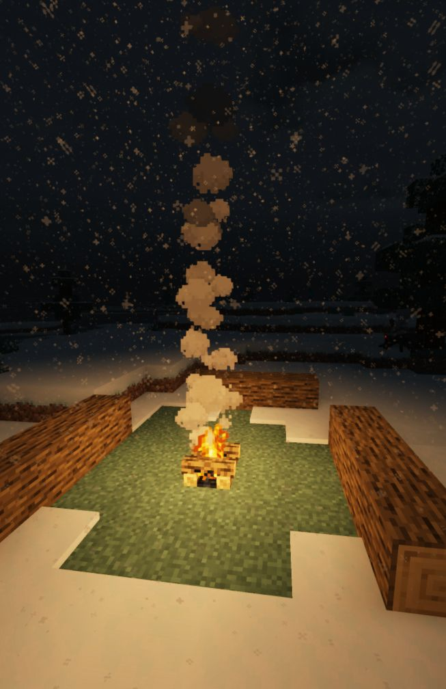

¿Qué es Minecraft?
Minecraft es un videojuego de construcción y aventura creado por Markus "Notch" Persson en el año 2009. Es uno de los juegos más vendidos de la historia con más de 238 millones de copias vendidas en todo el mundo.
El juego está disponible en su versión Java Edition 26.2® y Bedrock Edition. El mundo tiene un límite de construcción de Y320 con Y-64 bloques bajo el 0.
En el juego hay varios comandos que puedes usar como, por ejemplo:
/gamemode creative y tener acceso ilimitado a todos los bloques e items.
Datos curiosos: (Fuente: Minecraft Wiki, 2026)
El creeper fue creado por un error de programación cuando se quería crar un cerdo.El nether fue añadido en la versión Alpha 1.2.0.
La música original fue compuesta por C418.
Galería de Imágenes
Capturas y arte del universo de Minecraft.






Videos de Minecraft
Videos de parkour en el juego
🎵 Música de Minecraft 🎵
♫ C418 — Sweden
Minecraft Volume Alpha (2011)
Canvas Interactivo
Haz clic en el Creeper para hacerlo explotar!